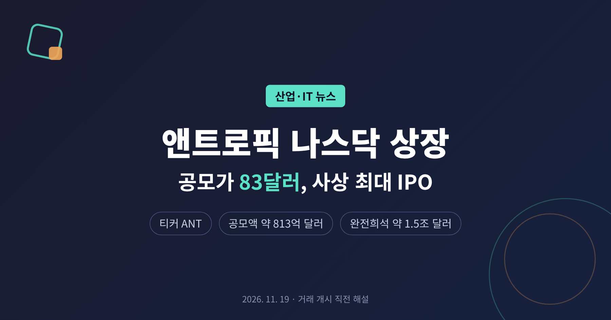
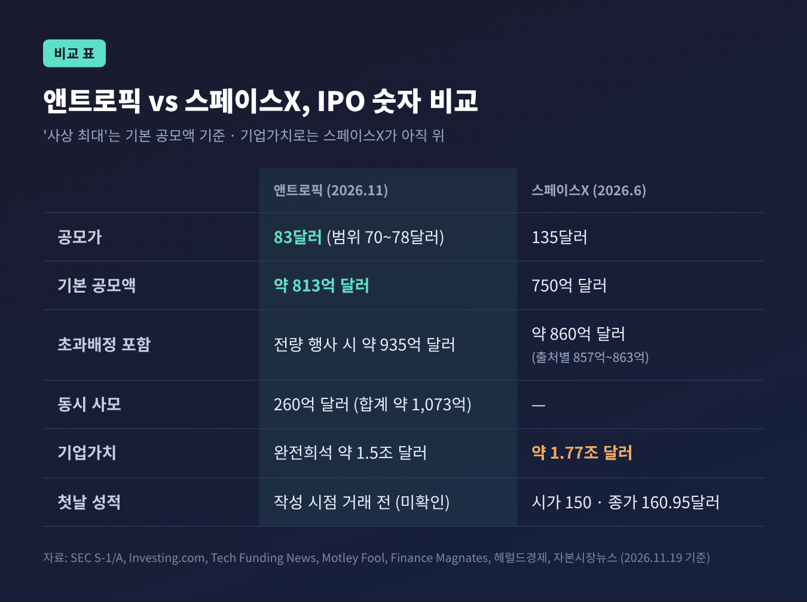
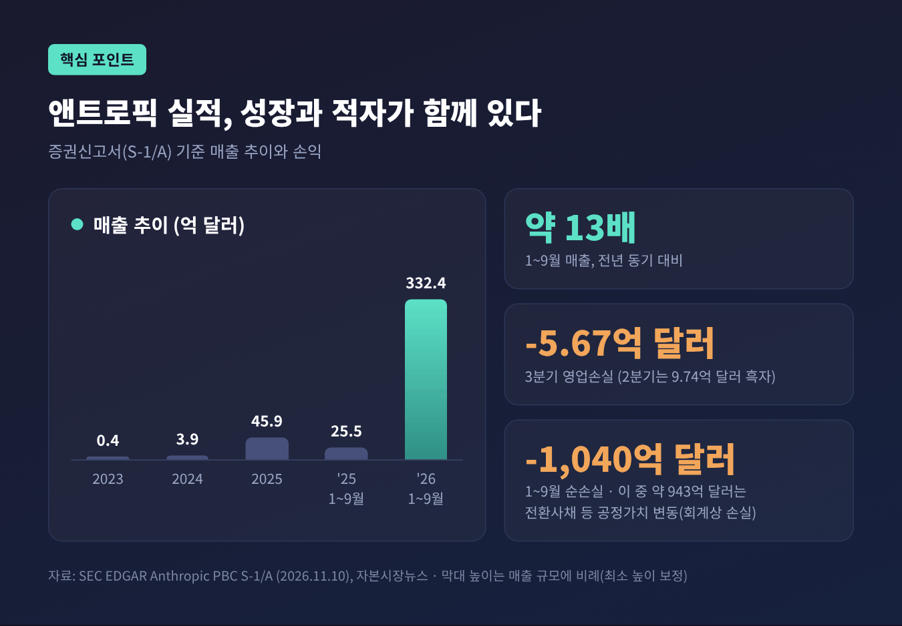
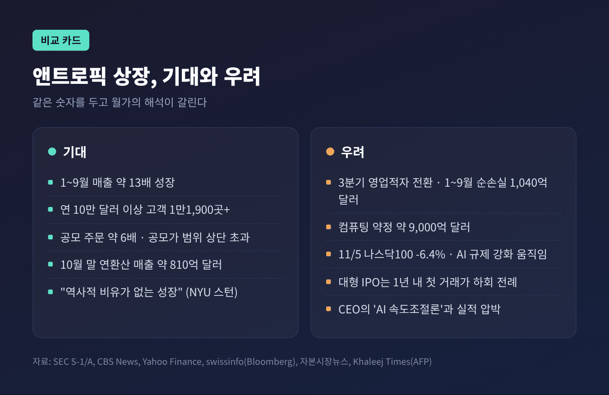
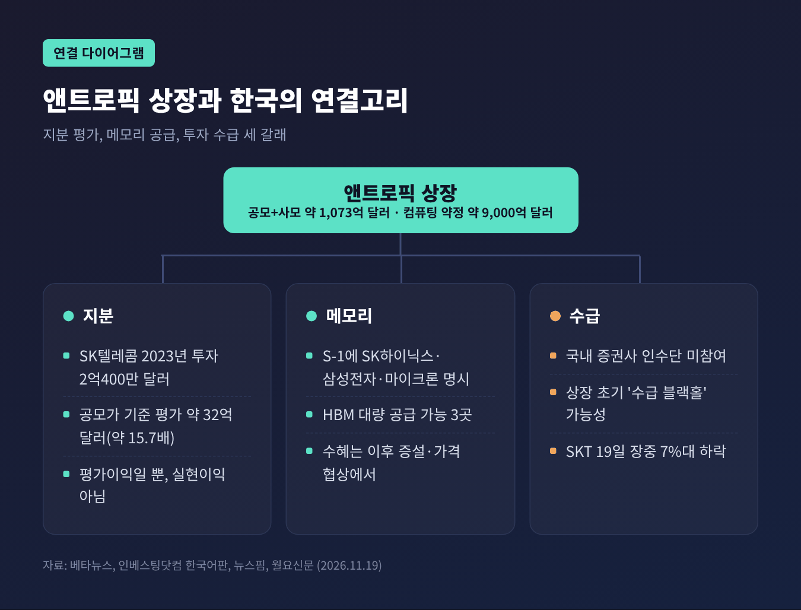
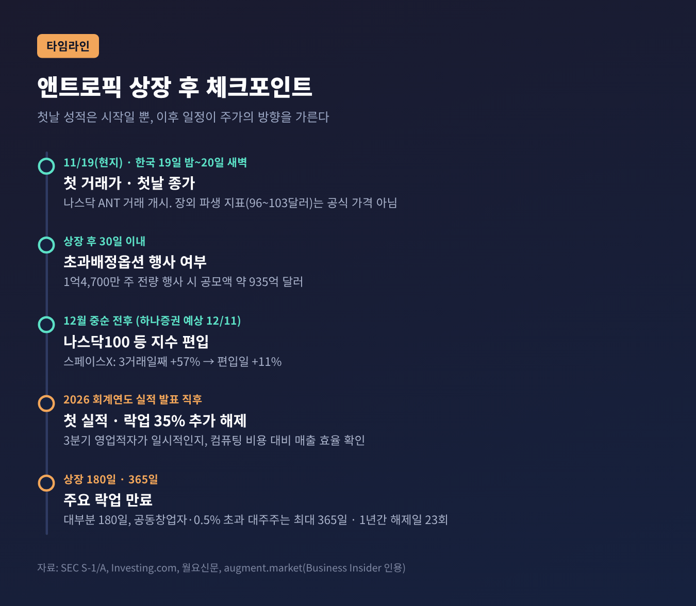

앤트로픽 나스닥 상장, 공모가 83달러 사상 최대 IPO의 배경과 쟁점

이번 글에서는 AI 기업 앤트로픽(Anthropic)의 나스닥 상장을 정리해 보겠습니다. 공모 조건과 기업가치, 돈을 버는 구조, 월가가 걱정하는 지점, 그리고 한국 반도체에 주는 신호까지 차례로 짚습니다.
3줄 요약
- 앤트로픽이 공모가를 주당 83달러로 확정했습니다. 희망 범위(70~78달러) 상단보다 5달러 높고, 기본 공모액은 약 813억 달러입니다.
- 기본 공모액 기준으로 스페이스X(750억 달러)를 넘어 사상 최대 IPO가 됐습니다. 완전희석 기준 기업가치는 약 1조5,000억 달러입니다.
- 다만 1~9월 순손실이 약 1,040억 달러이고, 3분기엔 영업적자로 돌아섰습니다. 높은 몸값을 실적으로 증명하는 일이 이제 시작됩니다.
※ 이 글은 한국 시간 19일 저녁, 거래 개시 직전 시점에 작성했습니다. 첫 거래가와 첫날 종가는 아직 확인되지 않았습니다.
■ 무슨 일이 있었나 — 공모가 83달러, 9억8천만 주
앤트로픽은 미국 현지 시간 18일 밤 공모가를 주당 83달러로 정했습니다. 11월 10일 증권신고서(S-1 수정본)에 적은 희망 범위는 70~78달러였습니다. 상단을 약 6.4% 웃돈 셈입니다.
물량도 늘었습니다. 당초 8억2,500만 주에서 9억8,000만 주로 약 19% 증액했습니다. 이 가운데 약 9억5,635만 주는 회사가 새로 찍는 신주입니다. 나머지 약 2,365만 주는 공동창업자 등 기존 주주가 파는 구주로, 이 대금은 회사로 들어가지 않습니다.
숫자를 묶으면 이렇습니다.
| 항목 | 내용 |
|---|---|
| 공모가 | 주당 83달러 (희망 범위 70~78달러) |
| 공모 주식 수 | 9억8,000만 주 (당초 8억2,500만 주) |
| 기본 공모액 | 약 813억 달러 |
| 초과배정 전량 행사 시 | 약 935억 달러 (최대 1억4,700만 주 추가) |
| 동시 사모(무의결권주) | 260억 달러 — 구글·엔비디아 각 100억, AMD 25억 등 7개사 |
| 공모+사모 합계 | 약 1,073억 달러 (약 143조 원) |
| 거래소·티커 | 나스닥 글로벌 셀렉트 마켓, ANT |
| 대표 주관 | 골드만삭스·모건스탠리 (공동 북러너 22곳) |
거래는 현지 19일(목) 시작됩니다. 나스닥 정규장 개장은 한국 시간 19일 밤 11시 30분입니다. 대형 공모주는 첫 체결이 개장 후 몇 시간 뒤에 나오는 경우가 많아, 실제 첫 가격은 19일 밤늦게부터 20일 새벽 사이에 확인될 전망입니다.
수요는 뜨거웠습니다. 로이터 보도로는 로드쇼 사흘째 주문이 공모 물량의 약 6배에 달했고, 7배까지 거론하는 보도도 있습니다. 물량의 최대 20%는 미국 개인 투자자 몫으로 배정됐습니다. 다만 국내 증권사는 인수단에 들어가지 못해, 한국 개인 투자자가 공모에 직접 참여할 길은 없었습니다.
■ 왜 중요한가 — '사상 최대'의 정확한 의미
'사상 최대'라는 수식어는 기준을 함께 봐야 합니다.
기본 공모액으로는 분명한 기록입니다. 스페이스X는 지난 6월 주당 135달러로 750억 달러를 모았습니다. 앤트로픽의 813억 달러가 이를 넘어섰습니다. 2019년 사우디 아람코(256억 달러)와 비교하면 세 배가 넘습니다.
초과배정 물량까지 넣으면 이야기가 조금 달라집니다. 스페이스X는 초과배정 포함 약 860억 달러(출처에 따라 857억~863억 달러)였습니다. 앤트로픽이 이를 넘으려면 주관사의 초과배정옵션 행사가 필요합니다.
기업가치로는 아직 2위입니다. 스페이스X의 상장 당시 가치는 약 1조7,700억 달러였습니다. 앤트로픽은 완전희석 기준 약 1조5,000억 달러, 발행주식 기준으로는 1조 달러를 조금 넘는 수준으로 보도됐습니다.

그럼에도 이번 상장이 주목받는 이유는 따로 있습니다. 생성형 AI 모델을 만드는 '프런티어 AI 연구소'가 공개시장에서 처음으로 가격을 받는 사례이기 때문입니다. 르네상스캐피털의 매튜 케네디는 이번 거래를 AI 투자 논리의 한가운데에 있는 사건으로 평가했습니다. 결과에 따라 AI 업종 전체의 분위기가 달라질 수 있다는 뜻입니다.
■ 몸값은 어떻게 매겨졌나 — 2조에서 1.5조로
몸값의 궤적부터 보겠습니다. 작년 9월 시리즈F 때 앤트로픽의 기업가치는 1,830억 달러였습니다. 올해 2월 3,800억 달러, 5월 시리즈H에서는 9,650억 달러로 뛰었습니다. 이번 공모가는 5월 평가액보다 약 55% 높습니다.
한때 시장에서는 2조 달러 이야기가 오갔습니다. 11월 초에도 일부 투자자 사이에서 1조2,500억~1조7,500억 달러 범위가 거론됐습니다. 결과적으로 1조5,000억 달러 선에서 정리됐습니다. 기대치보다는 낮춰 잡은 셈입니다.
이를 두고 해석이 갈립니다. 포춘은 시장 기대보다 낮은 가치 책정이 상장 첫날 주가를 끌어올리려는 계산일 수 있다고 봤습니다. 피치북의 해리슨 롤프스는 기관 수요를 바탕으로 한 전통적 공모 방식이라 공모가를 밑돌 가능성이 상대적으로 낮다고 분석했습니다.
매출 대비 배수는 어느 매출을 쓰느냐에 따라 크게 다릅니다. 회사가 밝힌 10월 말 연환산 매출(run-rate)은 약 810억 달러입니다. 이 기준이면 기업가치는 매출의 약 18.5배입니다. 반면 최근 12개월 실제 매출 353억 달러로 나누면 40배를 넘습니다. 연환산 매출은 최근 실적을 단순히 1년으로 늘린 추정치라는 점을 기억해 둘 필요가 있습니다.
■ 어떻게 돈을 버나 — 13배 성장과 1,040억 달러 순손실
성장 속도는 숫자만으로도 이례적입니다. 증권신고서에 따르면 매출은 2023년 4,100만 달러, 2024년 3억8,600만 달러, 2025년 45억8,500만 달러였습니다. 올해 1~9월에는 332억4,200만 달러로, 작년 같은 기간(25억4,500만 달러)의 약 13배입니다. 3분기 한 분기 매출만 약 170억 달러입니다.
수익 구조는 사용량 중심입니다. 상반기 기준 매출의 약 80%가 기업이 API 등으로 쓴 만큼 내는 소비형이고, 구독은 약 20%였습니다. 연 10만 달러 이상을 쓰는 고객은 작년 말 약 1,500곳에서 9월 말 1만1,900곳 이상으로 늘었습니다.
그늘도 뚜렷합니다. 1~9월 영업손실은 12억6천만 달러로, 작년 같은 기간 52억 달러보다 줄었습니다. 하지만 2분기 9억7,400만 달러 영업이익을 냈다가 3분기에 5억6,700만 달러 영업손실로 돌아섰습니다. 회사는 단기 컴퓨팅 용량 확보 비용을 이유로 들었습니다.
순손실은 1~9월 약 1,040억 달러입니다. 규모가 충격적이지만, 이 중 약 943억 달러는 전환사채·파생상품 등의 공정가치 변동에서 생긴 회계상 손실입니다. 현금이 그만큼 빠져나간 것은 아닙니다. 그래도 '아직 이익을 내지 못하는 회사'라는 사실은 변하지 않습니다.

더 큰 변수는 비용 약정입니다. 앤트로픽은 컴퓨팅·인프라에 약 9,000억 달러를 쓰기로 약정해 두었습니다. 그중 약 707억 달러는 향후 12개월 안에 지급해야 합니다. 구글 클라우드에 최소 1,145억 달러, 아마존에 1,100억 달러가 걸려 있습니다. 자본시장뉴스는 "변수는 매출보다 컴퓨팅 비용 약정"이라고 짚었습니다.
■ 누가 주인인가 — 아마존·구글, 그리고 창업자 의결권
지분 구조는 빅테크 의존도를 보여줍니다. 블룸버그에 따르면 상장 후 아마존이 약 15%, 구글이 약 14%를 갖게 됩니다. 5%를 넘는 벤처캐피털은 없습니다. 구글과 엔비디아는 이번 사모에서도 각각 100억 달러어치를 추가로 삽니다.
공급사이자 고객이자 주주인 기업들이 한데 얽힌 구조입니다. 안정적인 우군이라는 해석과, 돈이 같은 생태계 안에서 돌고 있다는 '순환 투자' 우려가 함께 나옵니다.
의결권은 창업자 쪽에 단단히 묶여 있습니다. 공모주(Class A)는 1주 1표지만, 공동창업자 7명이 가진 Class F가 일반 안건 의결권의 50.1%를 쥡니다. 장기이익신탁(LTBT)이 가진 Class T는 이사회 과반을 뽑습니다. 사모로 배정되는 Class N은 의결권이 없습니다. 회사는 공익법인(PBC) 구조가 주주의 재무적 이익과 충돌할 수 있다는 점을 위험요인으로 직접 적었습니다.
■ 월가가 걱정하는 것 — 적자, 거품론, 속도조절론
기대만큼 경계도 큽니다.
플로리다대 제이 리터 교수는 "시장이 매우 높은 기대를 가격에 반영하고 있다"고 말했습니다. 경영진이 그 기대를 실행으로 옮기기 어려울 수 있다는 지적입니다.
시장 환경도 녹록지 않습니다. 11월 5일 나스닥100 지수는 하루에 6.4% 떨어졌습니다. 2020년 3월 이후 최악의 하루였고, 시가총액 약 2조3천억 달러가 사라졌습니다. 중간선거 뒤 AI 규제 강화와 데이터센터 투자 둔화 우려가 겹친 결과였습니다. 11월 12일에는 엔비디아의 젠슨 황 CEO가 사임했습니다.
공모주의 경로에 대한 경고도 있습니다. 야후파이낸스에 따르면 2008년 이후 미국 12대 IPO는 모두 1년 안에 첫 거래가 아래로 내려간 적이 있습니다. 올해 미국 3대 IPO였던 스페이스X·SK하이닉스·세레브라스도 현재 첫 거래가를 밑돌고 있습니다.
경쟁 압력도 상수입니다. 더 싼 오픈소스·중국 모델로 고객이 옮겨갈 수 있다는 우려가 꾸준히 제기됩니다.
흥미로운 대목은 '속도조절론'입니다. 다리오 아모데이 CEO는 지난 9월 개인 웹사이트에 "AI 모델의 능력 향상 속도를 늦춰야 한다"고 썼습니다. CBS는 이번 상장이 투자자에게 그 경고를 넘어서 보라고 요구하는 셈이라고 평했습니다. 공개기업이 되면 분기 실적 압박이 출시 속도를 재촉할 수 있다는 우려(브래들리 터스크)도 같은 맥락입니다. 아모데이 본인은 IPO를 두고 "약속은 적게, 성과는 크게"를 바란다고 말했습니다.

■ 오픈AI와 한국 반도체에는 어떤 의미인가
오픈AI에는 일종의 시험지가 됩니다. 오픈AI는 최근 투자 유치 목표를 300억 달러에서 200억 달러로, 기업가치 목표를 약 1조4,000억 달러에서 1조2,500억 달러로 낮춘 것으로 전해졌습니다. 지난 6월 상장 서류를 비공개 제출했고, 2027년 상장이 거론됩니다. 앤트로픽의 상장 후 주가는 오픈AI 몸값의 기준점이 될 가능성이 큽니다.
한국과의 연결고리는 두 갈래입니다.
첫째는 지분입니다. SK텔레콤은 2023년 미국 벤처 자회사를 통해 2억400만 달러(약 2,720억 원)를 투자했습니다. 보도에 따르면 공모가 기준 평가액은 약 32억 달러(약 4조3천억 원)로 원금의 약 15.7배입니다. 다만 이는 공모가로 계산한 평가이익일 뿐, 팔아서 확정한 수익은 아닙니다. SK텔레콤 주가는 19일 장중 7% 넘게 밀렸는데, 기대가 이미 반영됐다는 차익실현 해석이 나왔습니다. LG(LG테크놀로지벤처스)와 네이버도 관계사를 통해 투자한 것으로 알려졌습니다.
둘째는 반도체입니다. 앤트로픽은 증권신고서에서 SK하이닉스·삼성전자·마이크론을 고성능 메모리 주요 공급사로 적었습니다. 급증하는 수요를 이들이 다 맞추지 못할 수 있다는 위험도 함께 기재했습니다. HBM을 대량으로 공급할 수 있는 곳은 사실상 이 세 회사뿐입니다. 미 전략국제문제연구소(CSIS)는 데이터센터 투자 1달러 중 약 54센트가 칩 구매에 쓰인다고 추정합니다.
다만 수혜가 곧바로 나타난다고 보기는 어렵습니다. 뉴스핌은 효과가 당장보다 이후 연도의 증설과 가격 협상에서 드러날 가능성을 짚었습니다. 하나증권 이경수 연구원은 상장 초기 자금이 앤트로픽으로 쏠리는 '수급 블랙홀'을, KB증권 김민규 연구원도 국내 투자자 수급 쏠림 가능성을 언급했습니다.

■ 상장 이후 무엇을 봐야 하나
앞으로 확인할 지점은 다섯 가지입니다.
- 첫 거래가와 첫날 종가 — 한국 시간 20일 새벽 확인됩니다. 르네상스캐피털의 케네디는 100달러 근처 종가를 '탄탄한 상승', 140달러 쪽이면 AI 열기 복귀 신호로 봤습니다. 장외 파생상품에서 96~103달러가 거론되지만 공식 가격은 아닙니다.
- 초과배정옵션 행사 — 1억4,700만 주가 모두 행사되면 공모액은 약 935억 달러로 늘어납니다.
- 지수 편입 — 하나증권은 나스닥100 편입을 12월 11일 전후로 예상합니다. 스페이스X는 상장 3거래일째 공모가 대비 57% 올랐다가 편입일엔 11%로 상승 폭이 줄었습니다.
- 락업 해제 — 일부 임직원은 첫날부터 보유분의 최대 10%를 팔 수 있습니다. 2026 회계연도 실적 발표 직후 35%가 추가로 풀리고, 대부분은 180일, 창업자·대주주는 최대 365일 묶입니다. 1년간 해제일이 23번에 이릅니다.
- 첫 실적 발표 — 4분기·연간 실적에서 3분기 영업적자가 일시적이었는지, 컴퓨팅 비용 대비 매출 효율이 나아지는지가 핵심입니다.

■ 정리하며
정리하면 이렇습니다. 예전엔 AI 연구소의 가치를 몇몇 벤처 투자자가 비공개로 매겼습니다. 이제는 매일 열리는 시장이 그 가격을 정합니다.
앤트로픽은 1년도 안 돼 매출을 열 배 넘게 키웠고, 공모 수요도 넉넉했습니다. 동시에 1,040억 달러 순손실, 9천억 달러 비용 약정, 규제와 거품 논쟁을 안고 상장합니다. 두 측면 모두 사실입니다.
"사상 최대 공모는 끝이 아니라 첫 번째 시험입니다." 그 시험의 첫 답안은 오늘 밤 나스닥에서, 두 번째 답안은 첫 실적 발표에서 나올 것입니다.
투자 유의 안내 — 이 글은 공개된 보도와 공시를 바탕으로 사건의 의미를 정리한 해설이며, 특정 종목의 매수·매도를 권유하지 않습니다. 언급된 수치는 작성 시점(2026년 11월 19일 저녁, 거래 개시 전) 기준이며 이후 달라질 수 있습니다. 투자 판단과 그 결과의 책임은 투자자 본인에게 있습니다.
참고 자료
- SEC EDGAR, Anthropic PBC S-1/A(Amendment No.2) (2026-11-10) — https://www.sec.gov/Archives/edgar/data/2130357/000162828026072484/anthropicpbc-sx1ax2.htm
- Investing.com, Anthropic prices IPO at $83 per share (2026-11-19) — https://www.investing.com/news/stock-market-news/anthropic-prices-ipo-at-83-per-share-432SI-5037977
- CBS News, Anthropic's IPO set for blastoff Thursday in key test for AI boom (2026-11-18) — https://www.cbsnews.com/news/anthropic-ipo-ai-boom-nasdaq-debut/
- TechCrunch, Anthropic prices IPO at $83 a share, above projected range (2026-11-18) — https://techcrunch.com/2026/11/18/anthropic-reportedly-prices-ipo-at-83-a-share-above-projected-range/
- Tech Funding News, Anthropic prices IPO at $83 per share in an $81.3B offering (2026-11-19) — https://techfundingnews.com/anthropic-prices-ipo-at-83-per-share-in-an-81-3b-offering-that-values-it-at-about-1-5t/
- Finance Magnates, Anthropic Debuts After Record $81 Billion IPO (2026-11-19) — https://www.financemagnates.com/forex/analysis/anthropic-debuts-after-record-81-billion-ipo-that-traders-bet-on-for-months/
- Yahoo Finance, Anthropic IPO live (2026-11-18) — https://finance.yahoo.com/technology/live/anthropic-ipo-live-company-said-to-price-stock-at-83-begin-trading-thursday-212656452.html
- Renaissance Capital, Anthropic sets terms for $61 billion IPO (2026-11-10) — https://www.renaissancecapital.com/IPO-Center/News/122657/anthropic-sets-terms-for-61-billion-ipo-targeting-a-1.2-trillion-market-cap
- Motley Fool, Anthropic Prices Its IPO at $83 a Share (2026-11-18) — https://www.fool.com/investing/2026/11/18/it-s-official-anthropic-prices-its-ipo-at-usd83-a-share-here-s-what-we-know-and-what-we-don-t/
- 자본시장뉴스, 앤트로픽 19일 상장…공모가 80달러 이상 저울질한다 (2026-11-18) — https://www.jabon.co.kr/news/articleView.html?idxno=8896
- MTN, 앤트로픽, 공모가 70~78달러 제시…'기업가치 최대 1.4조달러' (2026-11-11) — https://news.mtn.co.kr/article/2026111101552940388
- SBS Biz, 앤트로픽 IPO 몸값 낮추기...상장 첫날 주가 띄우기 전략? (2026-11-11) — https://biz.sbs.co.kr/article/20000345742
- 이투데이, 앤스로픽, 추수감사절 전 IPO 추진⋯1조5000억달러 몸값 목표 (2026-11-09) — https://etoday.co.kr/news/view/2645575
- 헤럴드경제, 앤트로픽, 공모가 83달러 확정…스페이스X 넘어 역대 최대 IPO (2026-11-19) — https://biz.heraldcorp.com/article/10942599
- 인베스팅닷컴 한국어판, 사상 최대 IPO 앤트로픽 오늘 밤 나스닥 데뷔 (2026-11-19) — https://kr.investing.com/news/stock-market-news/article-2182927
- 뉴스핌, 앤스로픽 IPO 143조 절반은 반도체 투자…삼성·SK HBM 수요 탄력 (2026-11-19) — https://www.newspim.com/news/view/20261119000828
- 베타뉴스, 2700억 투자해 4.3조 가치로…앤트로픽 IPO에 SK그룹 '잭팟' (2026-11-19) — https://www.betanews.net/article/view/beta202611190126
- 월요신문, 앤트로픽 상장 D-Day, 한국 AI 반도체 '투자 신호등' (2026-11-19) — https://www.wolyo.co.kr/news/articleView.html?idxno=320776
- augment.market, Anthropic's lock-up can last a year for some shareholders (2026-10-29) — https://augment.market/pulse/anthropics-lock-up-can-last-a-year-for-some-shareholders
- NVIDIA Newsroom, NVIDIA Announces CEO Transition (2026-11-12) — https://nvidianews.nvidia.com/news/nvidia-announces-ceo-transition
- Khaleej Times(AFP), Anthropic CEO calls for slowing pace of AI development (2026-09-12) — https://www.khaleejtimes.com/business/tech/anthropic-ceo-calls-for-slowing-ai-development
- swissinfo(Bloomberg), Nasdaq 100 wipes out $2.3 trillion in AI selloff (2026-11-05) — https://www.swissinfo.ch/eng/nasdaq-100-wipes-out-%242%2e3-trillion-in-ai-selloff%3a-markets-wrap/92330151
- IBTimes, OpenAI cuts fundraising target (2026-11-02) — https://www.ibtimes.com/openai-cuts-fundraising-target-ai-investor-caution-3809266